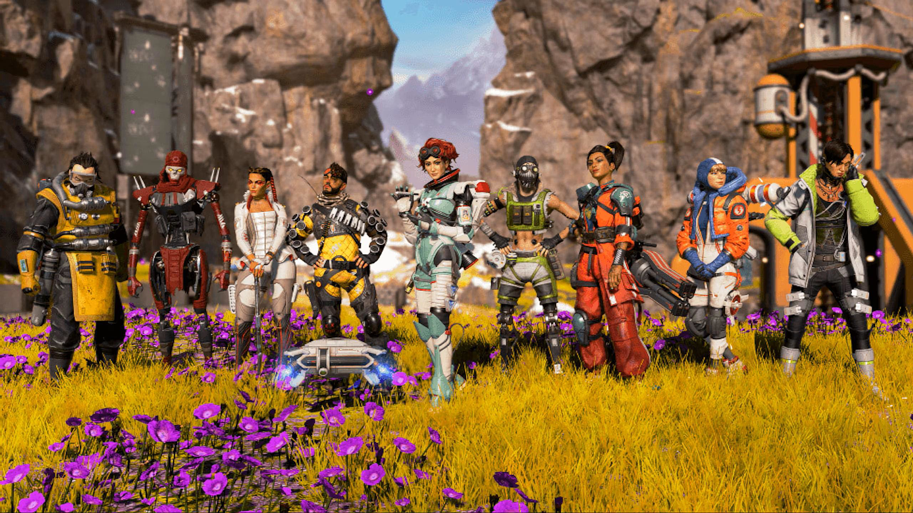
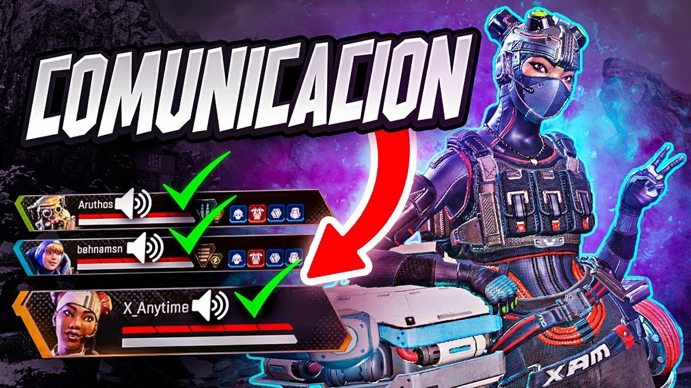
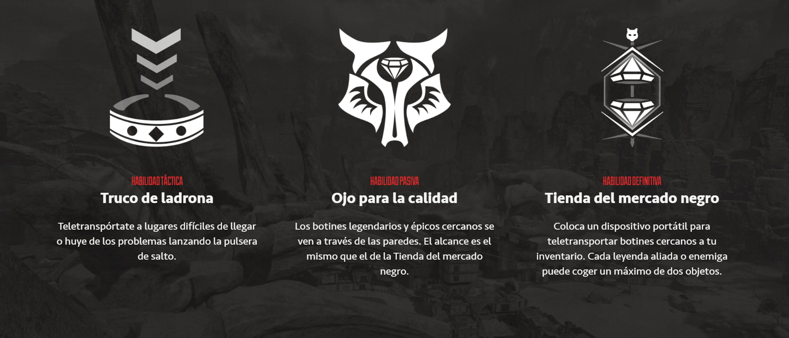

Las leyendas
Elige entre un elenco de forajidos, soldados, rebeldes y misántropos, cada uno con sus propias habilidades. Los Juegos Apex están abiertos a todo el mundo. Si sobrevives lo suficiente, te convertirás en una leyenda.

Modos
Apex Legends evoluciona constantemente. ¡Juega en partidas Battle Royale clásicas para 60 personas, en las zonas de combate y modos por tiempo limitados!

Mapas
Ubicados en planetas por todas las Tierras Salvajes, en estos enormes paisajes se celebran los enormes Juegos Apex.
Consejos Utiles
- Movimiento: Es un pilar fundamental de su jugabilidad, caracterizado por su fluidez, velocidad y verticalidad. Los jugadores pueden correr, deslizarse, trepar paredes y utilizar tirolesas o habilidades especiales para desplazarse con agilidad por el mapa. Este sistema de movimiento favorece el dinamismo en los combates, permite reposicionamientos estratégicos y recompensa la movilidad inteligente. Además, el diseño del mapa está pensado para explotar estas mecánicas, incentivando el uso creativo del entorno y ofreciendo múltiples rutas y opciones de escape o ataque.
- Habilidades: Son capacidades únicas que definen a cada leyenda y determinan su rol dentro del equipo. Cada personaje posee tres tipos de habilidades: una pasiva, una táctica y una definitiva (ultimate). Estas habilidades no solo aportan variedad al estilo de juego, sino que promueven la estrategia en equipo, la especialización de roles (como reconocimiento, apoyo u ofensiva) y la toma de decisiones en tiempo real. El equilibrio entre habilidades ofensivas, defensivas y de movilidad es clave para dominar el juego y adaptarse a diferentes situaciones dentro del campo de batalla.
-
Comunicacion:La comunicación entre jugadores es crucial sobre todo en un entorno competitivo en el que la coordinación efectiva entre escuadrones determina la victoria o la derrota.


